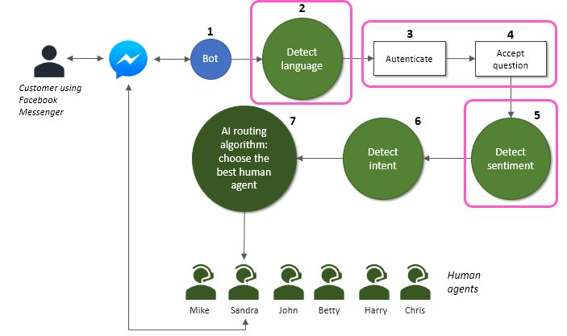
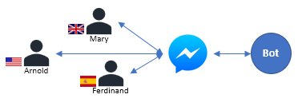
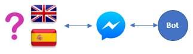
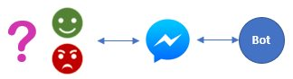

|
|
Building an AI-powered routing chatbot
Part 2 of 4 |
|
|
|
Building an AI-powered routing chatbot
Part 2 of 4 |
|
In the first part of this series we’ve built a Facebook chatbot (step 1). In the second part we’ll recognize the language, identify the customer, receive its question and analyze the text to detect the sentiment (steps 2, 3, 4 and 5).


To identify a customer the first thing to do is… to have customers. File CRM.py contains a set of 3 fictional customers registered on our store: Mary, Arnold and Ferdinand, with some personal fields:
self.contacts = [
{"contact id": 0, "name": "Mary", "age": 26, "postal code": "WC2N-5DU"},
{"contact id": 1, "name": "Arnold", "age": 41, "postal code": "10005"},
{"contact id": 2, "name": "Ferdinand", "age": 35, "postal code": "28000-070"}]
It also contains the history of interactions between those customers and our contact center.
All this info will be used later to select the best agent, but for now we are only interested in the contact id and the name.
The bot needs to maintain a simple dialog before directing the call to a human. The dialog will have 3 stages: greeting, customer identification and customer question. To keep track of it we’ll create a ConversationContext object and associate it to the recipient id, which identifies the FB client.
waiting_for_greeting = 0
waiting_for_contact_id = 1
waiting_for_question = 2
class ConversationContext(object):
def __init__(self):
self.reset()
def reset(self):
self.contact_id = -1
self.language = "en"
self.conversation_stage = waiting_for_greeting
All the contexts will be kept in the connections_context global dictionary:
connections_context = {}
And this function will help us getting the context of a conversation.
def get_connection_context(recipient_id):
global connections_context
if recipient_id in connections_context:
return connections_context[recipient_id]
else:
connections_context[recipient_id] = ConversationContext()
return connections_context[recipient_id]

We'll want to identify the language as soon as possible, and we'll do it on the first message we receive (our "greeting" stage). Because our bot is bilingual, we'll want it to respond in English if the user is writing in English, and in Spanish if the user is writing in Spanish. So this is what we’ll do in the first stage of the dialog: detect the language and ask for the customer id in that same language.
# Get the context of this interaction
context = get_connection_context(recipient_id)
# React according to the conversation stage
if context.conversation_stage == waiting_for_greeting:
# Detect language
context.language = text_analytics.guess_language(text, verbose=False)
if context.language=='es':
# Start by asking the contact id
send_message(recipient_id, "¡Bienvenido a Appliances of the Future! Usted está hablando con un chatbot. ¿Cuál es tu número de cliente?")
else:
# Any language that is not spanish will default to english
context.language=='en'
# Start by asking the contact id
send_message(recipient_id, "Welcome to Appliances of the Future! You're talking to a chatbot. What is your customer number?")
context.conversation_stage = waiting_for_contact_id
You can notice that text_analytics.guess_language will do all the magic guessing the language, but how will it do it? Pretty simple: we'll use the Language Detection API from Microsoft Text Analytics services. You can find all the code in TextAnalytics class, file TextAnalytics.py. You must subscribe this service to get your subscription key. When you have it, paste it into your code. You should also modify the services base url if your region is other than Western Europe.
# Needed for Microsoft Text Analytics services
self.text_analytics_subscription_key = "Replace by your Text Analytics subscription key"
self.text_analytics_base_url = "https://westeurope.api.cognitive.microsoft.com/text/analytics/v2.0/"
With this set up, the guess_language method can be used to check if some text is written in English or Spanish. A POST request is sent to the Language Detection API and the JSON response contains the detected language - very simple and easy to extend to more cases. A detailed tutorial from Microsoft can be found here.
def guess_language(self, text, verbose=False):
""" Guesses the language of a given text.
Returns the ISO-6391 identifier of the language ("en" or "es").
"""
language_api_url = self.text_analytics_base_url + "languages"
documents = { 'documents': [
{ 'id': '1', 'text': text },
]}
headers = {"Ocp-Apim-Subscription-Key": self.text_analytics_subscription_key}
response = requests.post(language_api_url, headers=headers, json=documents)
languages = response.json()
try:
ret = languages["documents"][0]["detectedLanguages"][0]["iso6391Name"]
except Exception as e:
print("Error in guess_language: {}".format(e))
ret = ""
if verbose:
print("Language API return for input '{}':".format(text))
pprint(languages)
# We'll only support 2 languages: "en" and "es"
# Catalan will default to "es"
if ret=="ca":
ret = "es"
# Any other language will default to "en"
if not ret=="es" and not ret=="en":
ret = "en"
if verbose:
print("guess_language returning '{}'".format(ret))
return ret
The bot will not be fussy about authentication. After asking the customer id, we’ll just search for a number in the user response and assume it’s the id. After that we’ll ask the user to tell us what he/she wants, in English or Spanish.
elif context.conversation_stage == waiting_for_contact_id:
# Does the input contain the customer id?
id = get_number_from_text(text)
if id >= 0:
contact = crm.get_contact_by_id(id)
if not contact is None:
# Contact identified, let's keep it and move on
context.contact_id = id
if context.language=='es':
send_message(recipient_id, "Ola {}, ¿como puedo ayudarte? Por favor haz tu pregunta.".format(contact["name"]))
else:
send_message(recipient_id, "Hi {}, how can I help you? Please state your question.".format(contact["name"]))
context.conversation_stage = waiting_for_question
else:
if context.language=='es':
send_message(recipient_id, "Lo siento, no estás registrado en el sistema. Por favor, registrate primero.")
else:
send_message(recipient_id, "I'm sorry, you're not registered in the system. Please sign up first.")
context.conversation_stage = waiting_for_greeting
else:
if context.language=='es':
send_message(recipient_id, "Por favor ingrese un número valido...")
else:
send_message(recipient_id, "Please enter a valid number...")
Knowing who the customer is, we accept his/her next input as the main question.
# Handle the user question now, routing it to the best agent
response_text = router.route_to_best_agent(context.contact_id, text)
send_message(recipient_id, response_text)
The router.route_to_best_agent method will do the rest of the work, although in this simple example that will mean analysing the input, choosing the best agent and returning a reply message, and not actually routing the interaction, which will strongly depend on your environment.

The router.route_to_best_agent method, which can be found on file AIRouter.py, starts by guessing the language and the sentiment of the main question. We've already covered the language detection. Sentiment detection will be done in a very similar manner. This time we'll use Sentiment API, from Microsoft Text Analytics services, which returns a numeric score between 0 and 1: a score close to 0 will indicate a dissatisfied customer, and close to 1 a happy customer. A value around 0.5 will mean no sentiment was detected.
Because we'll be using the same Text Analytics service, the subscription key you've requested to use the Language Detection API can be the same here. The method used to guess the sentiment can be found in TextAnalytics.py.
def guess_sentiment(self, text, language, verbose=False):
""" Guesses the sentiment of a given text.
Returns a number from 0 (negative sentiment) to 1 (positive sentiment).
"""
sentiment_api_url = self.text_analytics_base_url + "sentiment"
documents = { 'documents': [
{ 'id': '1', 'language': language, 'text': text }
]}
headers = {"Ocp-Apim-Subscription-Key": self.text_analytics_subscription_key}
response = requests.post(sentiment_api_url, headers=headers, json=documents)
sentiments = response.json()
try:
ret = sentiments["documents"][0]["score"]
except Exception as e:
print("Error in guess_sentiment: {}".format(e))
ret = 0.5
if verbose:
print("Sentiment API return for input '{0}' in language '{1}':".format(text, language))
pprint(sentiments)
print("guess_sentiment returning '{}'".format(ret))
return ret
The sentiment will be used later, in step 7, to select a human agent. Some agents have more empathy than others and that may make a difference handling tough interactions... We'll cover that in the last post of this series.
Until then, happy coding!

Previous: creating a Facebook Messenger bot using Python
Next: identifying the intent of the customer using Microsoft LUIS